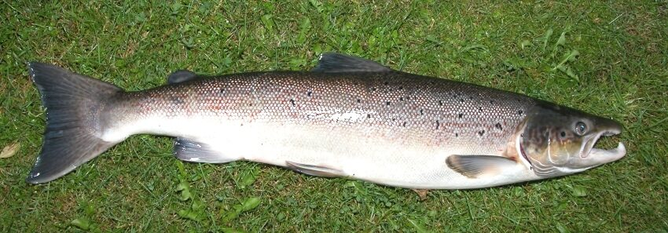

Rozpoznawanie i biologia
Dwa gatunki, jeden problem z rozróżnieniem
Troć wędrowna (Salmo trutta m. trutta) jest anadromiczną formą tego samego gatunku co pstrąg potokowy, natomiast łosoś atlantycki (Salmo salar) to odrębny gatunek. Obie ryby w szacie srebrzystej, świeżo wchodzące z morza, są do siebie łudząco podobne i ich rozróżnienie należy do najtrudniejszych zadań identyfikacyjnych w polskim wędkarstwie. Klasyczne cechy porównawcze: u łososia płetwa ogonowa jest wyraźnie wcięta, a trzon ogonowy smukły — dorosłego łososia można unieść za nasadę ogona; u troci ogon jest prosty lub wręcz lekko wypukły, a trzon masywny. Łosoś ma plamki niemal wyłącznie powyżej linii nabocznej i nieliczne na pokrywach skrzelowych, troć — liczne plamki również poniżej linii nabocznej. Pomocniczo: u łososia szczęka górna sięga najwyżej do tylnej krawędzi oka (u troci wyraźnie za oko), a w razie wątpliwości rozstrzyga liczba łusek między płetwą tłuszczową a linią naboczną (u łososia zwykle 10–13, u troci 13–16). Żadna pojedyncza cecha nie jest stuprocentowa — zawsze oceniaj ich zestaw, a w razie wątpliwości traktuj rybę według surowszych przepisów.
Środowisko i występowanie w Polsce
Oba gatunki dzielą życie między morze a rzeki. Troć wędrowna jest dziś znacznie liczniejsza: wchodzi przede wszystkim do rzek pomorskich — Słupi, Parsęty, Wieprzy, Regi, Łeby, Łupawy — oraz do Wisły i jej dolnych dopływów (Drwęca, Wda, Brda) i w mniejszym stopniu do systemu Odry. Łosoś, który w Polsce wyginął w latach osiemdziesiątych XX wieku, jest od lat dziewięćdziesiątych przedmiotem restytucji: programy zarybieniowe obejmują m.in. Drawę, Słupię, Parsętę, Regę, Drwęcę i Wisłę, a powracające tarlaki notuje się corocznie, choć populacje wciąż są kruche. Kluczowe dla obu gatunków są drożność rzek (przepławki na zaporach, z włocławską na czele, pozostają wąskim gardłem Wisły), czyste żwirowe tarliska w dopływach oraz warunki w Bałtyku. W rzece ryby wędrowne zatrzymują się w głębokich rynnach, dołach za przeszkodami i pod nawisami, przemieszczając się głównie przy podwyższonej, przybranej wodzie.
Biologia i anadromiczne wędrówki
Oba gatunki są anadromiczne: wykluwają się w rzece, spędzają w niej jako parr od roku do kilku lat, po czym jako srebrzyste smolty spływają do Bałtyku, gdzie intensywnie żerują — łosoś głównie na szprocie i śledziu w otwartym morzu, troć częściej w strefie przybrzeżnej. Po jednym do kilku lat wracają na tarło, z reguły do rzeki, w której się wykluły (zjawisko homingu). Ciąg tarłowy trwa od lata do zimy z nasileniem jesienią; samo tarło odbywa się od października do grudnia, a u troci nieraz do stycznia, na żwirowych prądach, gdzie samica wybija gniazdo. Po wejściu do słodkiej wody ryby praktycznie przestają żerować, a ataki na przynęty mają podłoże głównie agresji i odruchu. W odróżnieniu od pacyficznych krewniaków część tarlaków obu gatunków przeżywa tarło (jako tzw. kelty) i wraca do morza, by odbyć je ponownie — u troci zdarza się to znacznie częściej niż u łososia. Wycierające się osobniki ciemnieją, a samce wykształcają hakowatą żuchwę.
Żerowanie i aktywność według pór roku
W morzu oba gatunki żerują niemal cały rok i tam budują swoją masę — stąd troć brzegowa łowiona wiosną i późną jesienią z plaż Bałtyku jest osobną, popularną gałęzią wędkarstwa. W rzekach obraz jest inny: świeże, srebrne ryby wchodzące latem i jesienią reagują na przynęty najlepiej w pierwszych dniach po wejściu, a impulsem do ataku jest agresja, nie głód. Jesień to szczyt ciągu i zarazem początek okresów ochronnych, zima — czas keltów i ryb przygotowujących się do spłynięcia, a przedwiosenne miesiące (luty–kwiecień, zależnie od rzeki i przepisów) to klasyczny sezon na zimowane trocie i wracające kelty, łowione zwykle przy wyższej, lekko zabarwionej wodzie. Aktywność ryb wędrownych zależy od stanu wody bardziej niż od czegokolwiek innego: przybór po deszczach uruchamia ciąg, niżówka go zatrzymuje. Trzeba to powiedzieć wprost — w tym wędkarstwie normą są dni, a nawet tygodnie bez kontaktu z rybą.
Przepisy i połów
Wymiar, okresy ochronne i limit — orientacyjnie
Według ogólnych zasad PZW wymiar ochronny wynosi orientacyjnie 35 cm dla troci i 35 cm dla łososia, a limit dobowy to łącznie 2 sztuki obu gatunków. Okresy ochronne są jesienno-zimowe i zależne od rodzaju wody: w rzekach orientacyjnie od 1 października do 31 grudnia, przy czym na odcinkach przyujściowych, w morzu i na poszczególnych rzekach obowiązują inne daty i dodatkowe obostrzenia, a część wód ma całoroczne obręby ochronne obejmujące tarliska i okolice przepławek. Rzeki trociowe i łososiowe to w dużej mierze łowiska specjalne lub wody krainy pstrąga i lipienia z osobnymi regulaminami — z limitami sprzętowymi, nakazem haków bezzadziorowych czy rejestracją połowów. Te wartości podajemy wyłącznie orientacyjnie, na dzień publikacji: przepisy dotyczące ryb wędrownych zmieniają się częściej niż jakiekolwiek inne, więc bezwzględnie zweryfikuj je w aktualnym zezwoleniu, regulaminie okręgu oraz na pzw.org.pl, a przy połowach w morzu — także w przepisach dotyczących rybołówstwa morskiego.
Metody, przynęty i zezwolenia
Podstawową metodą rzeczną jest spinning: wahadłówki 12–26 g (klasyczne „gnomy” i toby), obrotówki nr 3–5 w wersjach ciężkich, woblery tonące i głęboko schodzące 7–11 cm oraz coraz częściej duże gumy na ciężkich główkach — wszystko w prowadzeniu wolnym, z przystankami, blisko dna. Sprzęt musi mieć zapas mocy: wędka 2,7–3,0 m o c.w. do 30–40 g, plecionka 0,15–0,19 mm i przypon odporny na przetarcia, bo walka z rybą wędrowną w nurcie jest długa i brutalna. Drugą wielką metodą jest mucha — dwuręczne lub mocne jednoręczne zestawy klas 8–10, tonące głowice i duże streamery oraz tubki. Uwaga praktyczna o znaczeniu prawnym: łowiska trociowe i łososiowe bardzo często wymagają dodatkowych, odrębnych zezwoleń ponad standardową składkę okręgową — dziennych lub okresowych licencji na konkretne odcinki, czasem z limitem wydawanych pozwoleń i obowiązkiem raportowania połowów. Brak takiej licencji to nie formalność, lecz poważne naruszenie.
Taktyka na rzece
Klucz pierwszy: woda. Najlepsze warunki to opadająca fala po przyborze, gdy rzeka klaruje się do barwy „herbaty” — wtedy świeże ryby są w ruchu i rozstawiają się na stanowiskach. Klucz drugi: miejsca. Obławiaj głębokie rynny na zakolach, doły poniżej bystrzy, wnętrza łuków z twardym dnem, okolice zwalonych drzew i wyloty przepławek (pamiętając o strefach zakazu) — troć i łosoś zatrzymują się tam, gdzie nurt daje osłonę przy minimalnym wysiłku. Przynętę prowadź w poprzek i z nurtem, pozwalając jej powoli „wystawać” na wyciągniętej lince przy dnie; większość ataków następuje na końcu przejścia, gdy przynęta unosi się i skręca pod brzeg. Systematyczność bije improwizację: dobre miejsce warto przeczesać kilkunastoma rzutami z różnych pozycji i wrócić na nie za kilka godzin, bo ryby wędrowne podchodzą falami. Hol prowadź spokojnie, w dół rzeki, z gotowym dużym podbierakiem — i z gotową decyzją, co zrobisz z rybą, zanim ją zobaczysz, w tym jak rozpoznasz gatunek.
Rekordy Polski — orientacyjnie
Rekordowe polskie trocie wędrowne przekraczały metr długości i 12–13 kg masy — najsłynniejsze pochodziły z Wisły, jej dolnych dopływów i rzek pomorskich, a wybitne ryby łowiono też z brzegów Bałtyku. Rekordy łososia po restytucji oscylują wokół 110–130 cm i kilkunastu kilogramów, przy czym część historycznych rekordów budzi spory, bo dotyczy ryb, których przynależność gatunkowa (troć czy łosoś) nie została jednoznacznie potwierdzona — co samo w sobie najlepiej ilustruje skalę trudności identyfikacji. Realnie bardzo dobra troć rzeczna mierzy 70–80 cm, a każda ryba ponad 90 cm to wydarzenie. Wszystkie wartości podajemy orientacyjnie; oficjalne rejestry rekordów prowadzą czasopisma wędkarskie.
Kulinaria, C&R i restytucja łososia
Mięso obu gatunków jest cenione, ale kontekst ochronny każe ważyć decyzje. Łosoś jest w Polsce przedmiotem trwającego od lat dziewięćdziesiątych programu restytucji — każda dorosła ryba wracająca na tarło ma dla odbudowy populacji ogromną wartość, dlatego wielu wędkarzy wypuszcza wszystkie łososie niezależnie od limitów, a część łowisk wprost tego wymaga. Troć ma się lepiej, lecz i jej populacje zależą od zarybień oraz drożności rzek; szczególnie warto oszczędzać duże samice oraz wychudzone kelty po tarle, których wartość kulinarna jest zresztą niewielka — najlepsze mięso mają srebrne ryby świeżo po wejściu z morza. Przy zamiarze wypuszczenia ryby używaj haków bezzadziorowych, nie wyciągaj jej na piach, podtrzymuj w nurcie do pełnego odzyskania sił i ogranicz sesję zdjęciową do kilku sekund. Pamiętaj też o świadomości prawnej: zabicie ryby, której gatunku nie potrafisz jednoznacznie określić, w okresie ochronnym jednego z gatunków, naraża cię na poważne konsekwencje.
Ciekawostki
Troć i pstrąg potokowy to formy jednego gatunku — w rzekach pomorskich część potomstwa troci nigdy nie spływa do morza i dorasta jako „potokowce”, a osiadłe samce uczestniczą w tarle ryb wędrownych. Homing ryb wędrownych opiera się na zapamiętanym „zapachu” rodzimej rzeki; skuteczność powrotów jest tak wysoka, że populacje poszczególnych rzek różnią się genetycznie. Wisła słynęła niegdyś z wielkanocnych połowów łososia — ryby tej rzeki, wchodzące zimą i wiosną, były odrębnym, dziś bezpowrotnie utraconym ekotypem; obecna restytucja korzysta z populacji łotewskiej Daugavy. Smolt opuszczający rzekę waży kilkadziesiąt gramów, a po dwóch latach morskiego żerowania potrafi wrócić jako ryba kilkukilogramowa — to jedno z najszybszych temp wzrostu wśród ryb naszej strefy. Charakterystyczne „świece”, czyli skoki ryby podczas holu, to znak rozpoznawczy walki z łososiowatymi i moment, w którym pada najwięcej ryb z haczyka.
FAQ — najczęstsze pytania
Złowiłem srebrną rybę — troć czy łosoś?
Sprawdź zestaw cech, nigdy pojedynczą: kształt płetwy ogonowej (wcięta i smukły trzon — łosoś; prosta i gruby trzon — troć), rozmieszczenie plamek (poniżej linii nabocznej liczne u troci, nieliczne lub brak u łososia), długość szczęki względem oka oraz liczbę łusek między płetwą tłuszczową a linią naboczną. Zrób wyraźne zdjęcia boku, ogona i głowy jeszcze przy wodzie. Jeśli mimo to masz wątpliwości, traktuj rybę według surowszego z przepisów obowiązujących na danej wodzie — najbezpieczniej wypuść ją niezwłocznie.
Czy na trocie i łososie wystarczy zwykła składka PZW?
Często nie. Wiele rzek trociowych i łososiowych funkcjonuje jako łowiska specjalne, krainy pstrąga i lipienia lub wody licencyjne, gdzie poza składką okręgową potrzebne jest dodatkowe zezwolenie — dzienne lub okresowe, niekiedy z limitowaną pulą i obowiązkiem zwrotu rejestru połowów. Bywa, że różne odcinki tej samej rzeki mają różnych gospodarzy i różne licencje. Przed wyjazdem ustal gospodarza wody, kup właściwe zezwolenie i przeczytaj jego regulamin w całości.
Kiedy jechać nad rzekę trociową?
Tradycyjne okna to przedwiośnie i wiosna (zimowane trocie i kelty, tam gdzie połów jest wtedy dozwolony) oraz lato i wczesna jesień na świeże ryby z ciągu — zawsze z poprawką na okresy ochronne, które jesienią i zimą zamykają większość rzek. Najsilniejszym pojedynczym czynnikiem jest jednak stan wody: opadający przybór potrafi „włączyć” rzekę na dzień lub dwa. Śledź stany wód i prognozy, a terminy traktuj elastycznie. I pamiętaj: nawet idealne warunki niczego nie gwarantują.
Czy łososie naprawdę wróciły do polskich rzek?
Tak, choć ostrożnie: po wyginięciu rodzimych populacji w latach osiemdziesiątych program restytucji oparty na zarybieniach przywrócił coroczne powroty tarlaków m.in. do Drawy, Słupi, Parsęty, Regi i systemu Wisły. Populacje pozostają jednak nieliczne i zależne od zarybień, przepławek i warunków w Bałtyku, a samodzielne, stabilne rozmnażanie potwierdzono tylko w części rzek. Dlatego status łososia w przepisach bywa zaostrzany, a wędkarska wstrzemięźliwość wobec tego gatunku to realny wkład w jego powrót.
Źródła i weryfikacja
Treści mają charakter przeglądowy i edukacyjny. Wymiary, okresy ochronne i limity dla troci i łososia podano orientacyjnie według ogólnych zasad PZW na dzień publikacji — w przypadku ryb wędrownych regulacje są szczególnie zmienne i różnią się między rzekami, odcinkami przyujściowymi i morzem, a łowiska specjalne mają własne regulaminy i licencje. Zweryfikuj zasady w aktualnym zezwoleniu, regulaminie okręgu i na pzw.org.pl. Artykuł nie gwarantuje wyników połowu.